Passionate software engineer with over 12 years of experience looking to create extraordinary games. Committed to continuous learning and applying innovative solutions to deliver engaging player experiences.
Automation Engineer at Azra Games (Current)
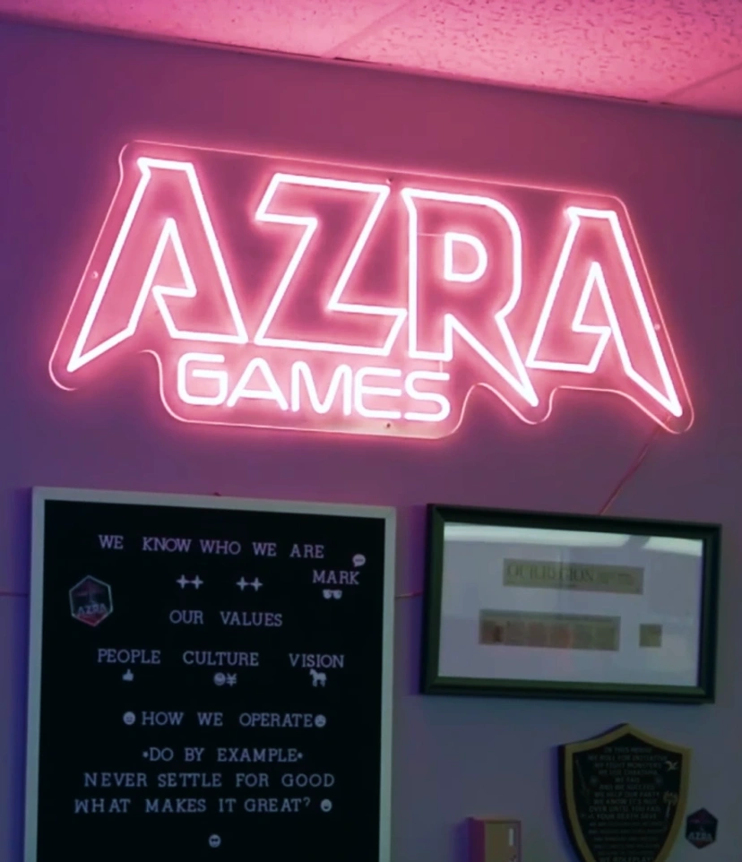
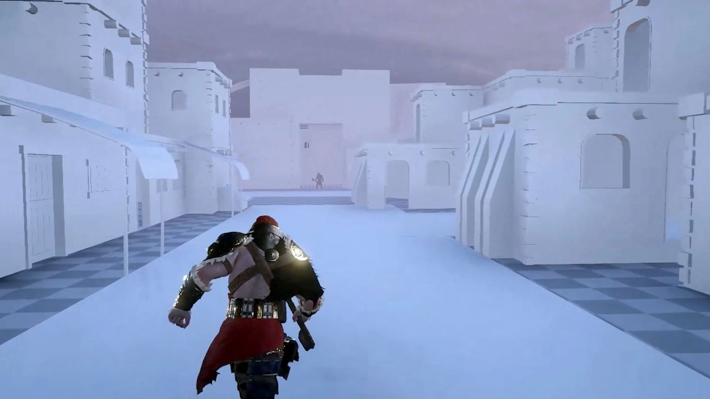
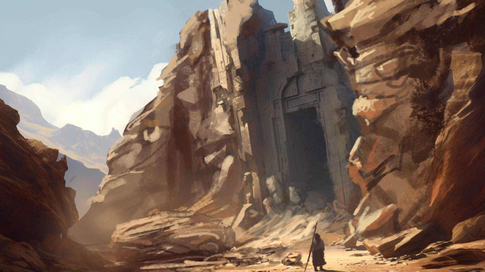
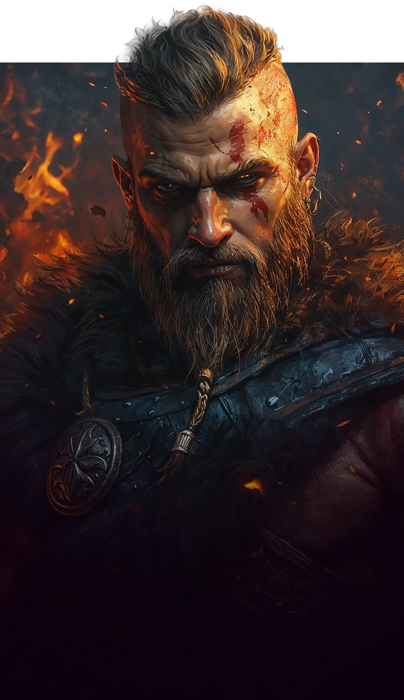
Pre-Commit
- Respond to development hurdles with more timely automated testing
- Integrate with TeamCity to run tests when peer reviews are requested
Record & Play
- Identify a QA need to reduce repetitive manual testing
- Design and implement a tool to capture gameplay steps, then replay them during automated testing runs
- Offer support and extend functionality to support more environments
Improve Test Automation
- Create a system to record and playback actions on mobile device
Software Engineer 2 at Electronic Arts (4 years)
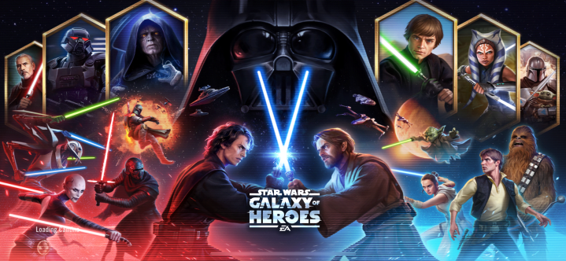
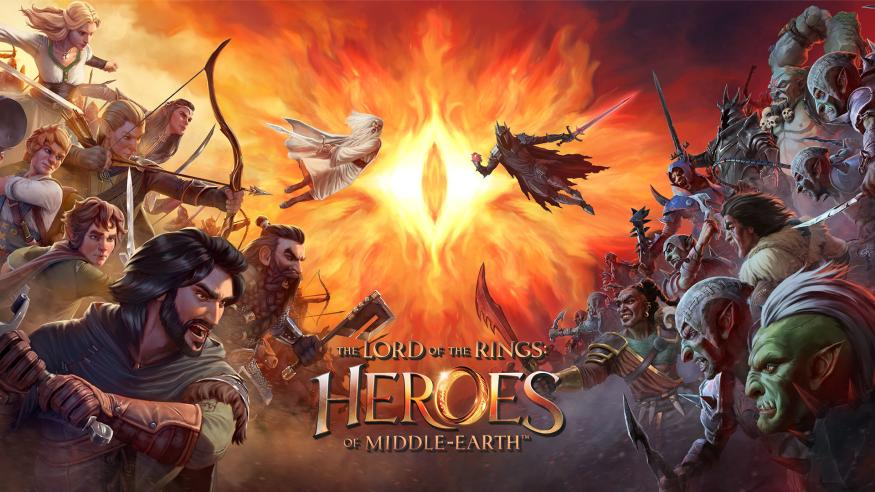


Pre-Commit
- Respond to an engineering request for more timely automated testing
- Design and implement a framework to run an extendable set of tests
- Each test checks the changed file list to determine if it needs to run
- Integrate with Jenkins to run tests when peer reviews are requested
- Support tests written by the client, server, and tooling teams
AWS Device Farm
- Compare and report on costs vs maintaining a decaying onsite device farm
- Prove out a solution by locally building and running commands
- Instrument testing on AWS device farm during existing Jenkins test runs
Record & Play
- Identify a QA need to reduce repetitive manual testing
- Suggest an approach of recording live gameplay and gather requirements
- Design and implement a tool to capture gameplay steps, then integrate with an existing automation solution to replay them during automated testing runs
- Demonstrate and promote the tool to QA
- Offer support and extend functionality to support more environments
Additional Test Reporting
- Respond to a QA request for more accessible test logging
- Prototype and later refine a solution to report automated test results directly to the QA test tracking tool, Zephyr
Improve Test Automation
- Replace frequent polling with a more performant relay of real-time updates
- Batch frequent messages to avoid flooding the network
- Refactor to reduce code duplication and simplify messaging
- Increase testing up-time from 30% to 95%
- Port existing automation framework to support a new title
- Collaborate to support test automation for 5 mobile titles
Full Stack Software Engineer at Iron Horse Games (5 months)
Steam Town
- Quickly ramp up on a new project and development platform with no support
- Upgrade UI with all new animations and resolutions
- Refactor to reduce code complexity and quantity by over 50%
- Replicate missing 9-slicing functionality
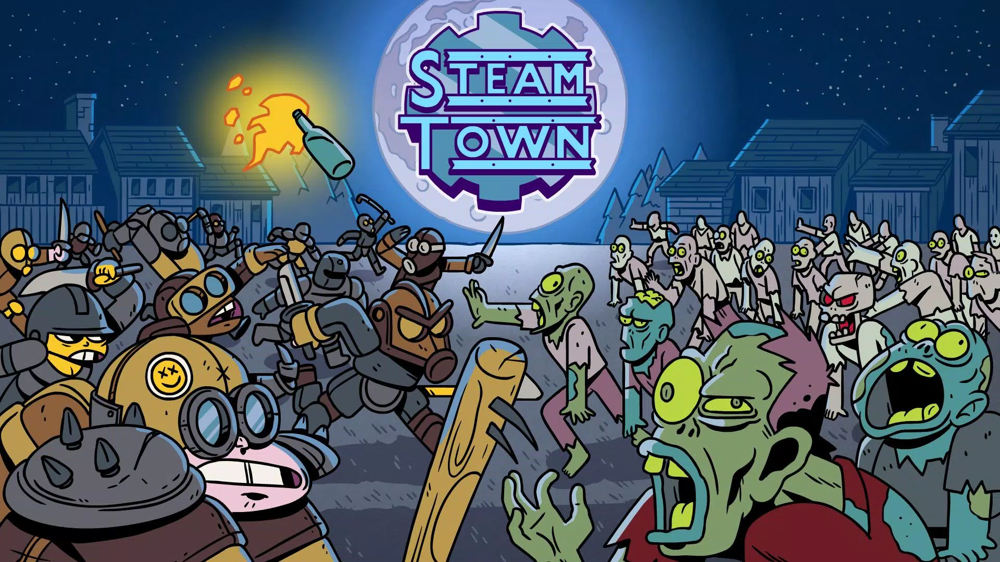
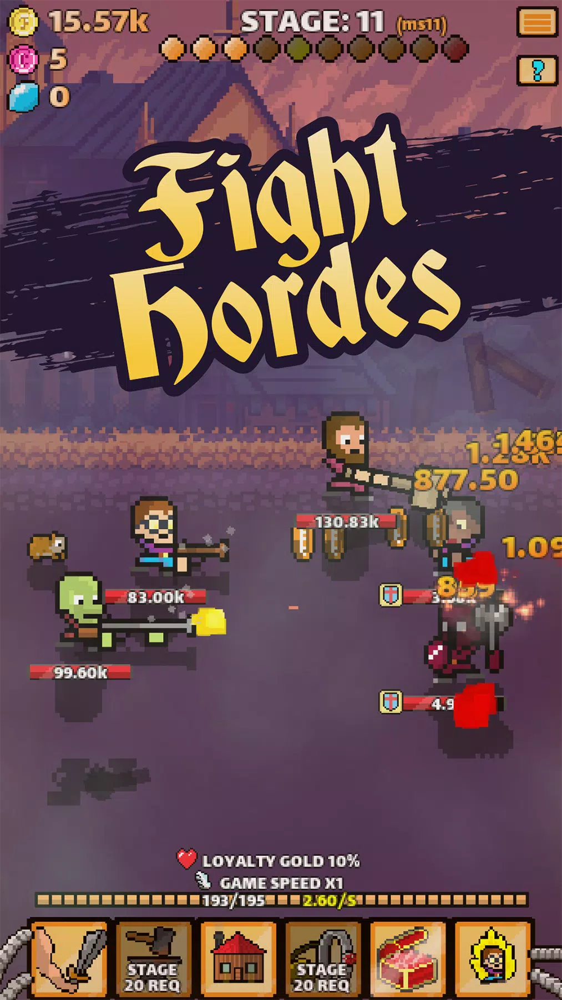
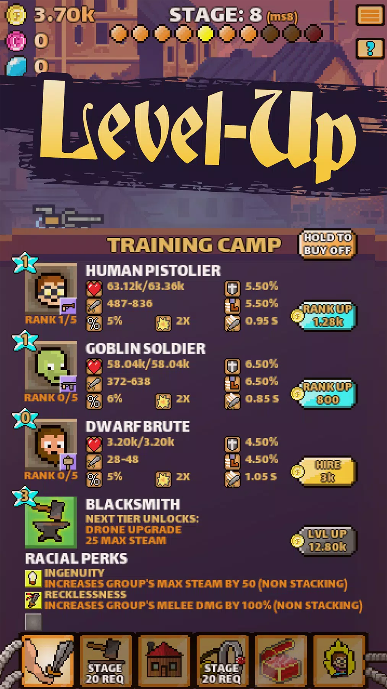
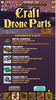
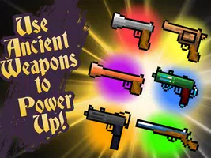
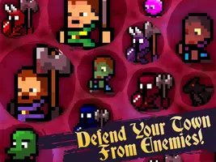
Superhero Comic Prototype
- Efficiently prototype new concepts to facilitate design discussions
- Smoothly reframe and brighten cells of a comic while panning across the page
Full Stack Software Engineer at 5th Planet Games (1 year)
Dawn of the Dragons: Ascension - Steam Page
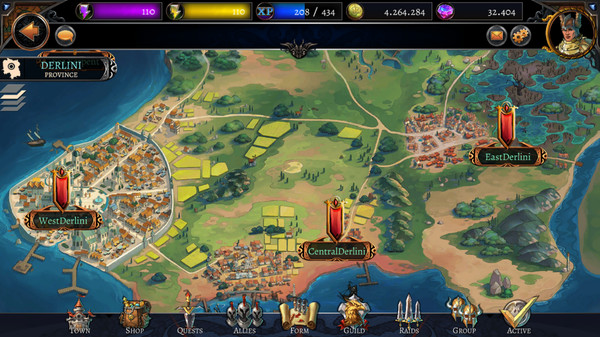
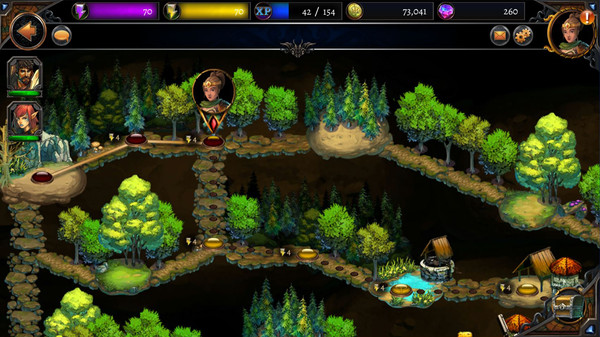
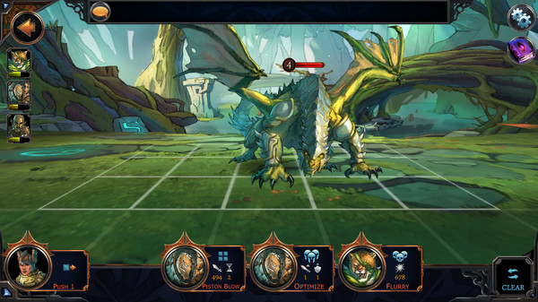
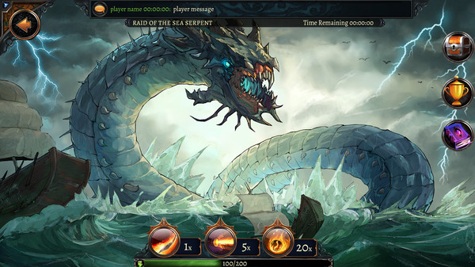
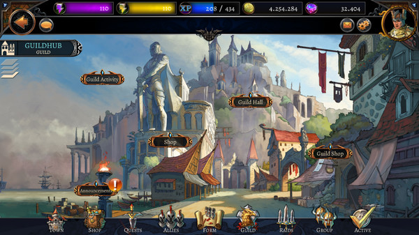
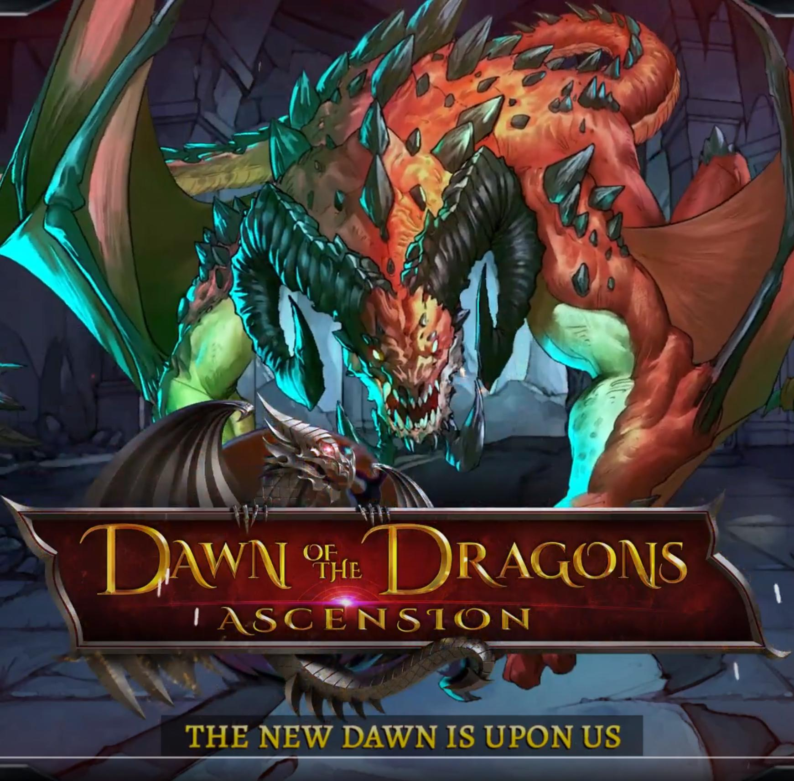
Campaigns Guild Feature
- Partner with a game designer and software engineer to create technical design documents and plan feature development tasks
- Implement the campaign feature across server and client components
- Move across the shared campaign map with an energy resource
- Strategically defeat nodes to limit buffs across the event
- Compile rewards from loot pools and deliver them to player inboxes once the event is complete
- Release and support the feature with bug fixes
UI
- Faithfully implement UI intent from art team mockups and wire frames
- Make UI/UX changes for improved clarity, player retention and monetization
- Handle the necessary changes for a PC conversion including dynamic scaling and mouseover text
Support
- Build, test, and maintain features across the server, client and admin tools
- Efficiently fix bugs, add functionality, and review code changes
Software Engineer 2 at Northrop Grumman (6 years)
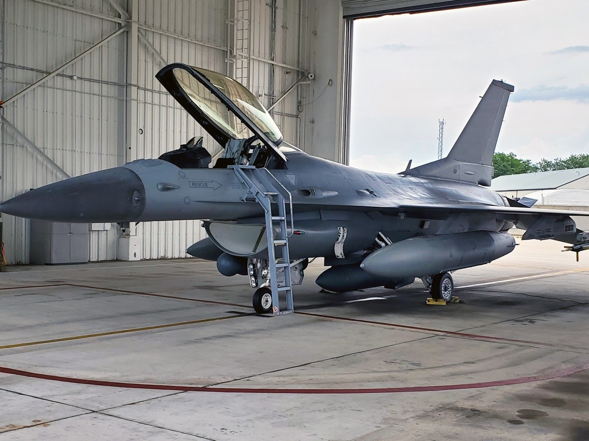
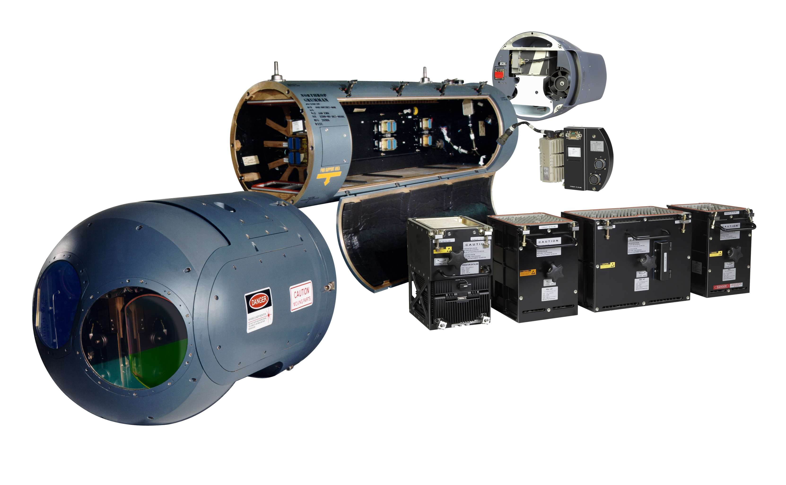
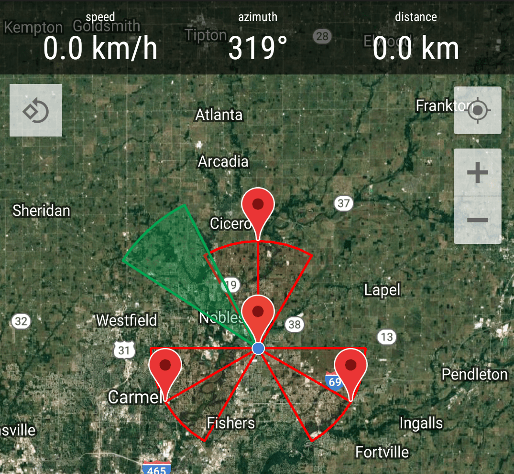
Mission Control Accreditation
- Create the cross-team integration environment for large (50,000+ man-hour) contract
- Include necessary hardware components as well as software components with methods to rebuild updates
- Create and follow a detailed series of test steps for accreditation
- Manage a team of 5 engineers with source control in git and tasking in Rally
- Create a RESTful Java API to forward messages to scripts and firmware
Mission Control Browser Tools
- Prototype requested functionally and regularly meet with stakeholders to guide iterative improvements
- Visualize and control hardware status including power, diagnostic reports and temperature
- Allocate resources to enable focusing on individual signal sets
- Build and configure a sequence of signal processing and analysis steps
- Visualize location data over time for receiving platform and numerous signals
Prototype Internal R&D Projects
- Display known network layout with the Java Universal Network/Graph Framework (JUNG)
- Procedurally configure connected devices with the Simple Network Management Protocol (SNMP)
- Exploratory project utilizing minimax in a rule-based environment to respond to network input
Sensor Chassis Test Suite
- Startup and run diagnostic on test chassis
- Install and validate test suite on an air-gapped network
Sensor Calibration Real-World Flight Testing
- Validate processes documentation by running against real hardware
- Direct a pilot to predetermined points near the facility antennae
Generalist Programmer / Owner at DoubleA Studios (1.5 years)
Kelkom
- LAN-based medical appointment scheduling and metrics system
- Deployed on a tablet to replace a hardware unit with blinking buttons
TTRPG Visualization Tool
- Character manager and visualization tool for table-top RPGs (Primarily D&D)
- Includes a separate initiative tracking application with status effects and dynamic layout scaling
Windows Taskbar Messaging Tool
- Broadcast messaging system for posts and advertising in a Windows toolbar
- Includes tabs to track multiple messaging channels including financial advice and retail coupons
From Space (Twin-stick shooter)
- 3 unique playable races
- Junkers generate trash shields, create turrets, and fire rapidly
- Space snails regenerate, charge forward, and gain a spread shot
- Saucers turn instantly, fire homing missiles, and fire bullets that shoot more bullets
- Enemies attempt to dodge projectiles, weaving through on higher difficulties
- Enemies drop powerup crates
Side Projects
Online Portfolio (this page)
- Use jquery to sort experience against a list of languages and tools
- github
Dice Game
- World space UI elements
- Physics-based RNG
- github
Manic Space Bot Repair (GGJ 2020)
- Gather parts and fix the bots so they can repair the ship
- Global game jam
How Our Mission Ended (GGJ 2019)
- Fight or befriend in a quest for stuffium.
- Simplified AI
- Global game jam
Lumen (GGJ 2018)
- Resource collection and management
- Global game jam
Ravenous Void (Ludum Dare 45)
- Brave the unknown to gather the power to fend off the darkness
- Procedural world generation
- JSON-based music
- ludum dare
Herding Cats (Ludum Dare 44)
- Armed with a lazer pointer, try to get cats to assist in solving puzzles
- ludum dare
AI Opponent for a Customized Chess Game
- Use Negamax algorithm to select best move
- github
Jigsaw Puzzle Creator
- Chop any image into puzzle pieces and put them back together again
- github
Education
Sacramento State
- Received a bachelor's degree in computer science
- Worked as an adjunct professor, tutor, and grader covering all undergraduate computer science coursework
- Represented school in state programming competition
San Joaquin Delta College
- Received an associate's degree in computer science